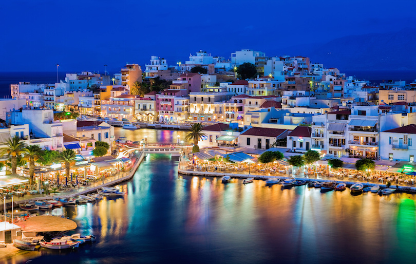
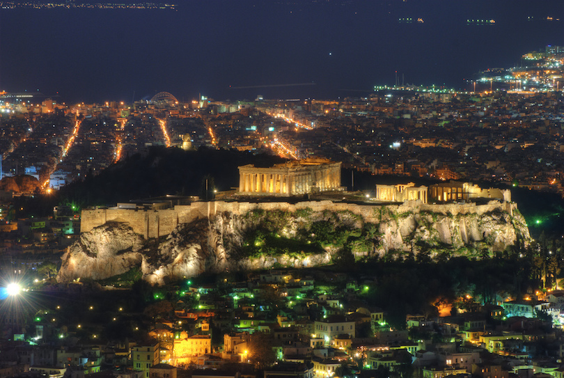

Thessaloniki is Greece’s second-largest city and the capital city of the Macedonian region of
Northern Greece. Lively festivals, social events and a buzzing nightlife make this city the cultural
capital of Greece,Comprised of a historic city center and commercial district, Thessaloniki offers both old and new
attractions from its Byzantine walls, White Tower and Turkish baths to colorful food markets,museums and art galleries
Thessaloniki’s nightlife is unmatched. From small tavernas to nightclubs and other entertainment venues, Thessaloniki offers it all.
2-Museum of Byzantine Culture
This large, extensive museum covers thousands of artifacts from Prechristian and Byzantine times.
These include frescoes, mosaics and wall paintings, rescued arches from historic buildings, ceramics
and textiles. Much of the museum’s permanent display themes focus on early Christians, their
rituals, beliefs, and daily life. There are several early Christian tombs and graves that were excavated
in Thessaloniki on display here. The museum offers both guided and unguided tours for adults, as
3-Zagori
Zagori is a region of great natural beauty, with striking geology and two national parks,
in northwestern Greece. It’s dense forests and rugged mountains are furrowed by powerful rivers
and dotted with traditional villages, many featuring grand stone houses dating from the late eighteenth century.
The best way to enjoy the area is by hiking the numerous paths connecting the villages. The most accessible and rewarding target is the wonderful Víkos Gorge.
4-Peloponnese
Shaped much like a large leaf, Peloponnese was traditionally called Morea, which means mulberry
leaf. Located in the southernmost region of both Europe and Greece, Peloponnese is a wide
peninsula connected to the mainland by the Rio-Antirrio bridge.
Interspersed with classical Greek temples, Venetian fortresses, Byzantine churches and Mycenaean
palaces, Peloponnese echoes the ancient cultures and events from its extensive history. Among
these ancient ruins is Olympia, where the first Olympic Games were hosted in honor of Zeus.
5-Delphi
Second to the Acropolis in Athens, Delphi is Greece’s most popular archaeological site. Located
about two and half hours from Athens along the slopes of the awe-inspiring Mount Parnassus,
Delphi was once revered by the ancient Greeks as the center of the earth. Dedicated to the god,
Apollo, Delphi was an important oracle.
6-Santorini
Santorini is a volcanic island in the Cyclades group of the Greek islands. It is famous for its dramatic
views, stunning sunsets, the white-washed houses, and its very own active volcano. Fira, the capital
of Santorini, is a marriage of Venetian and Cycladic architecture, whose white cobblestone streets
bustle with shops, tavernas, hotels and cafes, while clinging on the edge of the 400 meter (1,300 ft) high cliffs.
7-Mount Athos
Mount Athos is a mountain and a peninsula in northern Greece. The peninsula, the easternmost
“leg” of the larger Halkidiki peninsula houses some 1,400 monks in 20 Eastern Orthodox
monasteries. An autonomous state under Greek sovereignty, entry into Mount Athos is strictly
controlled and only males are allowed entrance.
8-Meteora
The Greek word meteora means “suspended in the air,” and this phrase aptly describes the
spectacular cliffs that rise more than 1,200 feet (366 meters) into the air overlooking the villages of
Kalambaka and Kastraki in the north central mainland of Greece.
What makes these cliffs even more inspiring are the historic monasteries perched along the
summits. Dating back to the 14th and 16th centuries, the monasteries at Meteora were built by
monks seeking spiritual isolation and freedom from religious persecution.
9-Crete

The largest of the Greek islands, Crete is a spacious land of pleasing contrasts where landscapes
range from stunning coastline to rugged mountains and rolling countryside dotted with olive trees.
Bustling metropolitan cities spread beyond to quiet villages centered around outdoor coffee shops.
Steeped in history, Crete still bears archaeological traces of the many civilizations that inhabited it
down through the centuries.
10-Athens

Inhabited for more than 3,000 years, Athens is widely known as the cradle of Western civilization and
the birthplace of democracy. The city presents a confusing blend of historical and modern features.
Athens is famous for its archaeological ruins and monuments such as the famous Acropolis, the
Parthenon, the Ancient Agora and the Theatre of Dionysos just to name a few.
However, Athens is not just about ancient ruins. This bustling city is also an important center for
business, culture and nightlife.